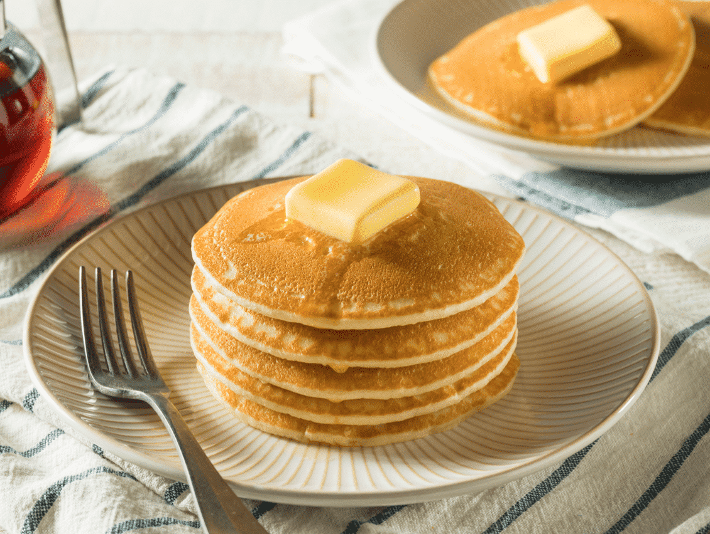

Hot Cakes Recipe

Fluffy hot cakes that you can almost taste through the screen.
This recipe will guide you to make the best pancakes that you'll ever taste.
Yields 12 pancakes
Ingredients
- 1½ cups buttermilk
- 1¼ cups all-purpose flour
- ⅓ cup white sugar
- ⅓ cup dry farina cereal (such as Cream of Wheat®)
- ¼ cup vegetable oil
- 1 egg
- 1 teaspoon vanilla extract
- 1 teaspoon baking powder
- 1 teaspoon baking soda
- ½ teaspoon salt
Steps
- Combine buttermilk, flour, sugar, farina, oil, egg, vanilla extract, baking powder, baking soda, and salt in a bowl. Beat using an electric mixer on low until just combined.
- Heat a lightly oiled griddle over medium-low heat. Drop batter by large spoonfuls onto the griddle and cook until middle is set, about 4 minutes. Flip and cook until golden brown on the other side, 3 to 5 minutes. Repeat with remaining batter.
Homepage - Mexican Scrambled Eggs - Hot Cakes - Perfect White Rice